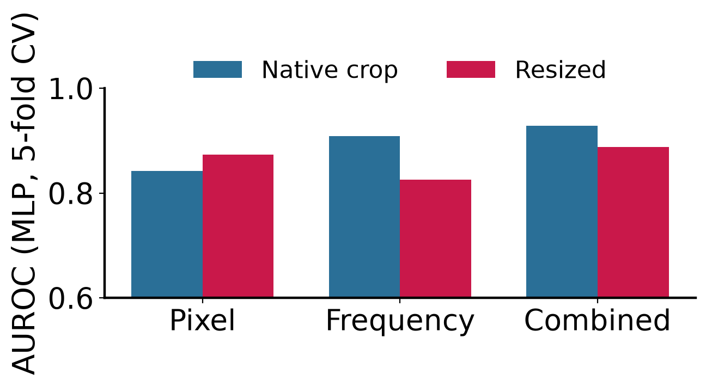

Detection of AI-Generated Video via the Frequency Domain
Team: mdhkideggimirch
Astitva Garg 1 (24B2440)
24b2440@iitb.ac.in1
IE 643Deep Learning-Theory and Practice
Abstract
Do the frequency content of video frames, and how it drifts from frame to frame, detect diffusion-generated video better than pixel
statistics? On a controlled set of 432 real and 552 generated clips (five generators, two held out) we compare pixel-only, frequency-only
and fused models on the same held-out clips, plus 250 public clips and four extra experiments. Every number comes from code in the repository.
Introduction
Why it matters: realistic synthetic video can mislead, and detectors trained on one generator often fail on the next.
Why frequency: generators denoise and up-sample, leaving traces in the spectrum (too little or too much fine detail); in video, how these traces change over time is a second cue.
Why deep learning: small networks learn to combine hundreds of weak spectral cues; a pixel baseline and a fine-tuned ResNet-18 give every claim a fair reference.
Figure 1: Mean log spectrum of 40 clips per source (top-left) and each generator minus real (blue: less energy than real, red: more; * = unseen). Each generator has its own fingerprint: LTX a regular dot grid, ModelScope extra energy.
We outline our major contributions below:
A controlled, checksummed dataset where real and fake differ only in how they were made (same frames, crop, re-encode), with a shortcut audit.
A like-for-like comparison of pixel, frequency and fusion features, with paired bootstrap intervals, unseen generators and 250 public clips.
Four extra experiments (resize, frame order, new prompts, frequency + ResNet-18), two of them negative results.
A live, reproducible demo and one-command pipeline from data bundle to every table and figure.
Workflow
Figure 2 illustrates the workflow, from data collection to the reproducible release.
Figure 2: Overall workflow.
Methodology
Figure 3 illustrates the architecture: two feature branches from the same 14 frames, three model families on top.
Figure 3: Overall architecture.
Training: weighted BCE, AdamW, cosine schedule; validation picks settings, the test split is never used for any choice.
Dataset Details
Source
Train
Val
Test
Total
Real (Pexels stock)
304
63
65
432
LTX-Video
115
19
17
151
AnimateDiff
98
19
13
130
Stable Video Diffusion
78
21
16
115
ModelScope (unseen)
0
0
99
99
Wan2.1 (unseen)
0
0
57
57
Total
595
122
267
984
Table 1: Clips per source and split (split by source group, 70/15/15).
18 scene types, 60 prompts; YOLOv8 filter (no people or cars); 250 public clips (Sora 2, Veo 3, Kling, HunyuanVideo, Wan2) used only as a stress test.
Shortcut audit: metadata alone gives AUROC 1.0 on raw files (hence the normalisation); file size still leaves 0.65.
Novelty Assessment
Extra experiments, each from a script and a result file:
1Resize vs native crop. Resizing low-passes frames. On identical clips it costs the frequency features 0.07–0.09 AUROC; the pixel baseline is unchanged (Figure 4).
2Real motion? Frames reversed or shuffled. Reversal changes nothing (drift is time-symmetric); shuffling costs the temporal features 0.14–0.20 AUROC on seen generators (Figure 5).
3New prompts. ModelScope regenerated from 36 unseen prompts (72 clips), no retraining: spectral and pixel models lose 0.05–0.15 AUROC (prompt reuse had inflated them). Frequency still beats pixel by +0.26 [+0.17, +0.34]; ResNet-18 barely moves (0.91 → 0.89).
4Frequency + ResNet-18 (negative). Late fusion helps the frequency model (+0.06–0.08 unseen) but not ResNet-18: seen +0.004 [−0.03, +0.04], Wan2.1 −0.20.
5Reproducible. Live demo, 1,295 checksums, one-command pipeline, 45 tests, 18 example clips (wrong verdicts kept).

Figure 4: Grouped-CV AUROC, native crop vs resized.Figure 5: AUROC change when frames are shuffled.
Results
Pixel vs frequency vs fusion on the same held-out clips (MLP, 95 % intervals): on seen generators frequency beats pixel (+0.075 [+0.020, +0.145]) and fusion beats pixel (+0.092 [+0.045, +0.147]). Transfer to unseen generators is uneven (Figures 6 and 7, Table 2).
Figure 6: Pixel vs frequency vs fusion, held-out clips.Figure 7: All models, mean of 5 seeds.
Model
Seen
ModelScope
Wan2.1
250 public
MLP pixel statistics
0.889
0.619
0.827
0.694
Pixel CNN (scratch)
0.808
0.598
0.871
0.679
ResNet-18 (fine-tuned)
0.954
0.900
0.926
0.781
Ours: MLP frequency
0.966
0.798
0.690
0.727
Ours: spectro-temporal CNN
0.919
0.740
0.640
0.757
Ours: MLP fusion
0.977
0.744
0.819
0.754
Table 2: AUROC on held-out clips, mean of 5 seeds. Heavy compression, blur and down-scaling remove the measured high frequencies and cost 0.2–0.3 AUROC.
Conclusion
Frequency and drift features beat pixel statistics on seen generators with 42 k parameters; transfer to unseen generators and compression is partial.
Resizing quietly removes the signal. ResNet-18 transfers best; frequency adds nothing to it in simple fusion.
Next: non-stock real footage, prompt-disjoint unseen sets at scale, compression-aware training.
References
[1] Joel Frank, Thorsten Eisenhofer, Lea Schönherr, Asja Fischer, Dorothea Kolossa and Thorsten Holz. Leveraging Frequency Analysis for Deep Fake Image Recognition, ICML, 2020. https://arxiv.org/abs/2003.08685
[2] Ricard Durall, Margret Keuper and Janis Keuper. Watch Your Up-Convolution: CNN Based Generative Deep Neural Networks Are Failing to Reproduce Spectral Distributions, CVPR, 2020. https://arxiv.org/abs/2003.01826
[3] Riccardo Corvi, Davide Cozzolino, Giada Zingarini, Giovanni Poggi, Koki Nagano and Luisa Verdoliva. On the Detection of Synthetic Images Generated by Diffusion Models, ICASSP, 2023. https://arxiv.org/abs/2211.00680
[4] Haoxing Chen, Yan Hong, Zizheng Huang, Zhuoer Xu, Zhangxuan Gu, Yaohui Li, Jun Lan, Huijia Zhu, Jianfu Zhang, Weiqiang Wang and Huaxiong Li. DeMamba: AI-Generated Video Detection on Million-Scale GenVideo Benchmark, arXiv, 2024. https://arxiv.org/abs/2405.19707
[5] Taehoon Kim, Jongwook Choi, Yonghyun Jeong, Haeun Noh, Jaejun Yoo, Seungryul Baek and Jongwon Choi. Beyond Spatial Frequency: Pixel-wise Temporal Frequency-based Deepfake Video Detection, ICCV, 2025. https://arxiv.org/abs/2507.02398
[6] Kaiming He, Xiangyu Zhang, Shaoqing Ren and Jian Sun. Deep Residual Learning for Image Recognition, CVPR, 2016. https://arxiv.org/abs/1512.03385
Acknowledgments
We thank the IE 643 instructor and TAs, Pexels, and the authors of the open generators used here.